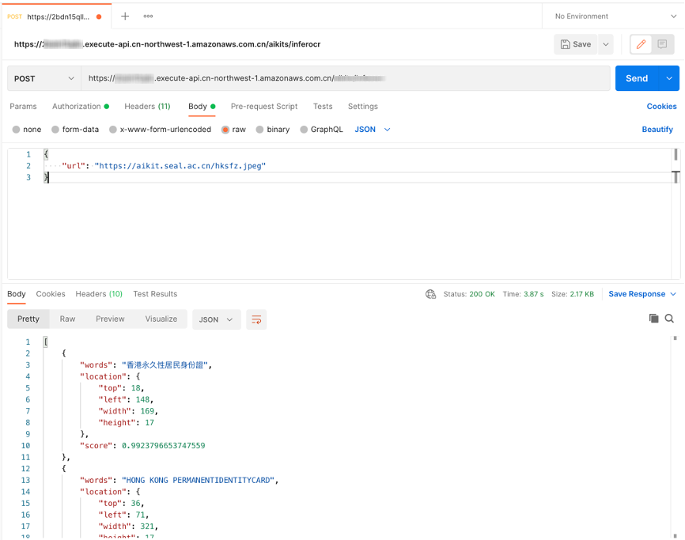

人脸相似度比对
TODO
适用场景
TODO
解决方案架构
用户基于 Amazon Cloudformartion 部署后可以通过调用 HTTP(s) 或 API接口等 方式使用。其中，通过 Amazon API Gateway 创建的 REST API 接口向用户提供 AI 调用服务，用户可以将请求（图片或文本）通过 HTTP POST 方式发送请求到 Amazon API Gateway，之后由 Amazon API Gateway 调用 Lambda 完成 AI 文字识别过程并将识别文字及坐标等结果（JSON格式数据）返回给调用端。 本方案使用 Lambda 、 Amazon API Gateway 等无服务架构方案，用户无需担心在云中或本地管理和运行服务器或运行时。只需按实际使用量支付费用。
架构图请参考 架构概览: 基于 Lambda 实现
成本预估
//TODO
快速部署
您可以通过 Amazon CloudFormation 部署 人脸相似度比对 功能，具体步骤请见 概述: 部署解决方案，并在参数部分确认 FaceComparison 参数设置为 yes 。在部署完成后，在 Amazon CloudFormation 控制台上的堆栈列表里可以查看到包含 FaceComparison 名称的嵌套堆栈（Nested Stack）。
信息
部署时间大约需要：TODO
开始使用
调用 URL
您可以在 Amazon CloudFormation 的 Outputs 标签页中看到以 FaceComparison 为前缀的记录的 URL。
REST API接口参考
-
HTTP 方法:
POST -
Body 请求参数
| 名称 | 类型 | 是否必选 | 说明 |
|---|---|---|---|
| url | String | 与 img 参数二选一，优先级高于 img | 图像的 URL 地址。支持 HTTP/HTTPS 和 S3 协议。要求图像格式为 jpg/jpeg/png/bmp ，最长边不超过 4096px。 |
| img | String | 与 url 参数二选一 | 进行 base64 编码的图像数据 |
- 请求 Body 示例
{
"url": "TODO"
}
{
"img": "/9j/4AAQSkZJRgABAQEAYABgAAD/2wBDAAgGBgcGBQgHBwcJCQgKDBQNDAsLDBkSEw8UHRofHh0aHBwgJC4nICIsIxwcKDcpLDAxNDQ0Hyc5PTgyPC4zNDL/……"
}
- 返回参数
| 名称 | 类型 | 说明 |
|---|---|---|
| words | String | 识别文本字符串内容 |
| location | JSON | 识别文本在图像中的的坐标值，包含 top，left，width，height的整数值 |
| score | Float | 识别文本的置信度值，为0到1区间内 Float 型数值 |
- 返回示例
[
{
"words": "香港永久性居民身份證",
"location": {
"top": 18,
"left": 148,
"width": 169,
"height": 17
},
"score": 0.9923796653747559
},
{
"words": "HONG KONG PERMANENTIDENTITYCARD",
"location": {
"top": 36,
"left": 71,
"width": 321,
"height": 17
},
"score": 0.9825196266174316
}
]
代码示例
cURL
curl --location --request POST 'https://[API_ID].execute-api.[AWS_REGION].amazonaws.com/[STAGE]/face_comparison' \
--header 'Content-Type: application/json' \
--data-raw '{
"url":"TODO"
}'
Python （AWS_IAM 认证）
import requests
import json
from aws_requests_auth.boto_utils import BotoAWSRequestsAuth
auth = BotoAWSRequestsAuth(aws_host='[API_ID].execute-api.[AWS_REGION].amazonaws.com',
aws_region='[AWS_REGION]',
aws_service='execute-api')
url = 'https://[API_ID].execute-api.[AWS_REGION].amazonaws.com/[STAGE]/face_comparison'
payload = {
'url': 'TODO'
}
response = requests.request("POST", url, data=json.dumps(payload), auth=auth)
print(json.loads(response.text))
Python （NONE 认证）
import requests
import json
url = "https://[API_ID].execute-api.[AWS_REGION].amazonaws.com/[STAGE]/face_comparison"
payload = json.dumps({
"url": "TODO"
})
headers = {
'Content-Type': 'application/json'
}
response = requests.request("POST", url, headers=headers, data=payload)
print(response.text)
Java
OkHttpClient client = new OkHttpClient().newBuilder()
.build();
MediaType mediaType = MediaType.parse("application/json");
RequestBody body = RequestBody.create(mediaType, "{\n \"url\":\"TODO\"\n}");
Request request = new Request.Builder()
.url("https://xxxxxxxxxxx.execute-api.xxxxxxxxx.amazonaws.com/[STAGE]/face_comparison")
.method("POST", body)
.addHeader("Content-Type", "application/json")
.build();
Response response = client.newCall(request).execute();
在 Postman 中以 AWS_IAM 方式请求 URL
在部署解决方案时，如果APIGatewayAuthorization参数设置为AWS_IAM，将自动使用 IAM 权限控制对 API 的访问。在方案部署结束后，在 Amazon CloudFormation 的 Outputs 标签页中看到以 FaceComparison 为前缀的URL。在Postman中新建标签页，并把 URL 粘贴到地址栏，选择POST作为HTTP调用方法。

打开Authorization配置，在下拉列表里选择 Amazon Web Service Signature ，并填写对应账户的AccessKey、SecretKey和 Amazon Web Service Region（如 cn-north-1 或 cn-northwest-1 ）。

打开 Body 配置项，选中raw和JSON数据类型。在Body中输入测试数据，单击Send按钮即可看到相应返回结果。
{
"url": "TODO"
}

卸载部署
您可以通过 Amazon CloudFormation 卸载 人脸相似度比对 功能，具体步骤请见 部署解决方案: 更新 Amazon CloudFormation 堆栈，并在参数部分确认 FaceComparison 参数设置为 no 。
信息
卸载时间大约需要：TODO